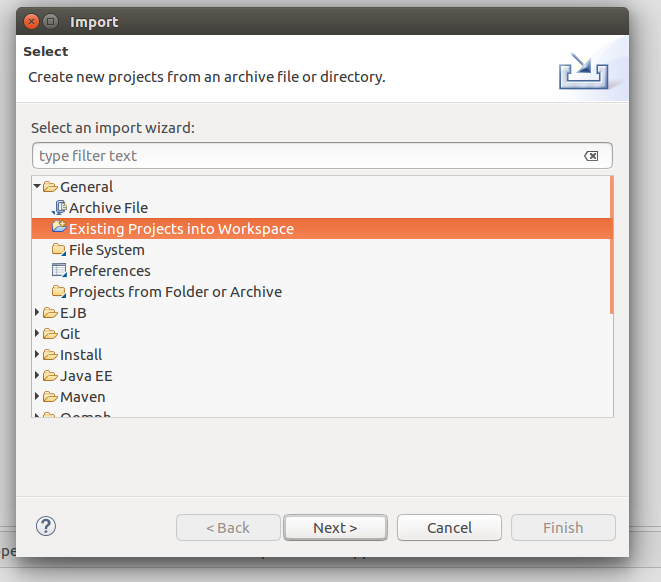

Cloner le repository :
git clone https://github.com/HeleneMyr/IFI-PLAY.git
Le plugin sbteclipse permet d'importer des projets sbt sur eclipse.
Pour l'installer, il suffit de lancer les commandes suivantes :
chmod 777 sbt
./sbt
Lorsqu'on a récupéré la main, il faut lancer les commandes suivantes : > compile
> eclipse
Clique droit > Import > General > Existing Projects into Workspace
Clique next > {choisir le projet} > Finish
File > settings > plugin > Scala)Play peu être utilisé avec SBT (Scala build tool) pour compiler et executer le projet. SBT permet aussi de gèrer les dépendances du projet.
Pour lancer le projet :
./sbt run
Pour recompiler à côté : ./sbt compile